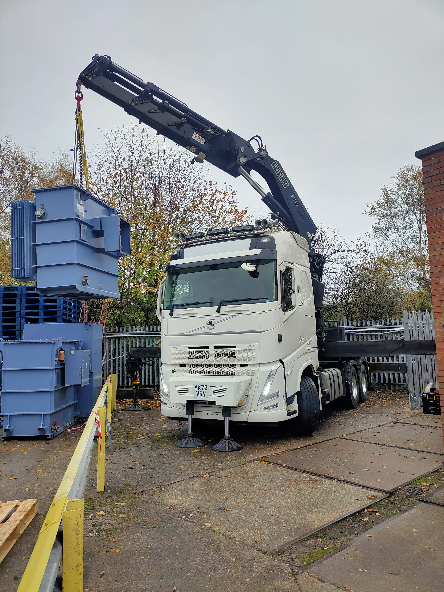
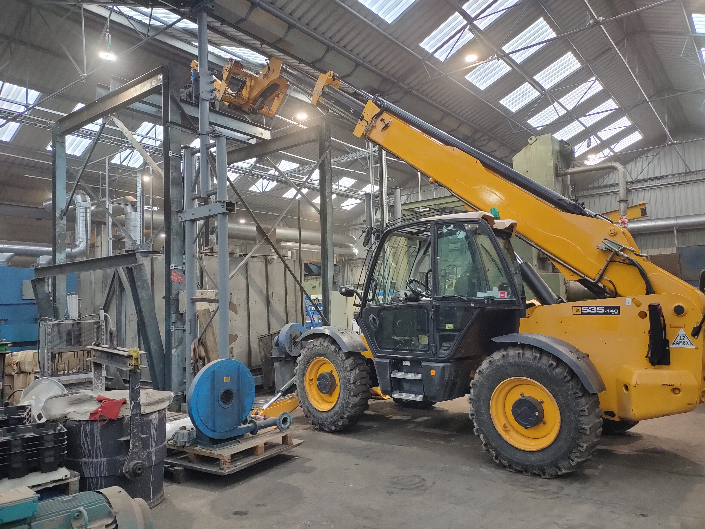
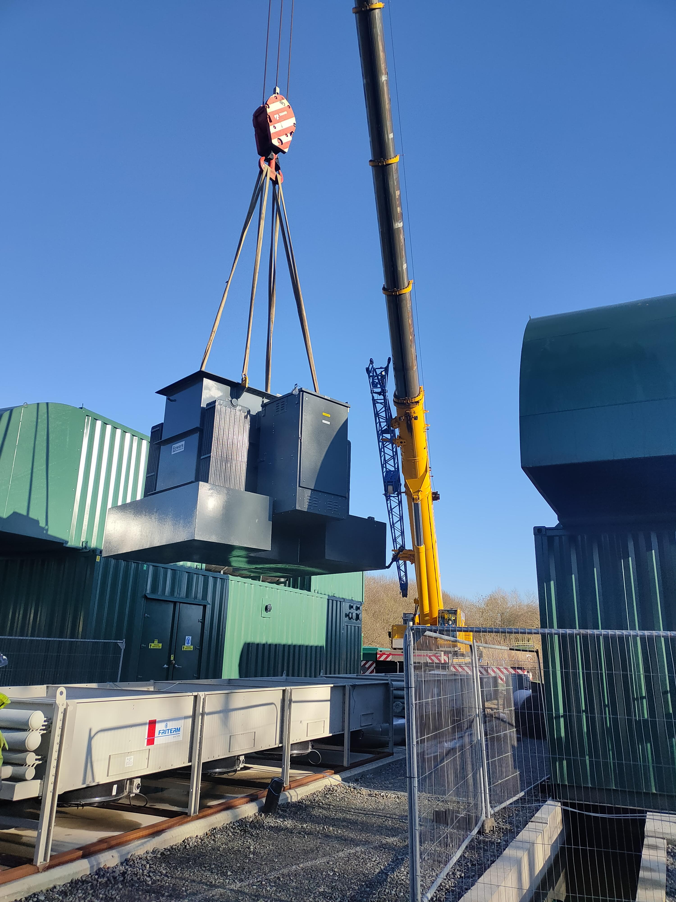
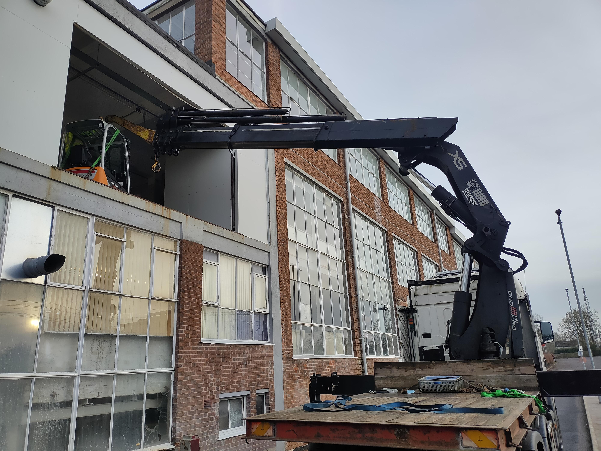
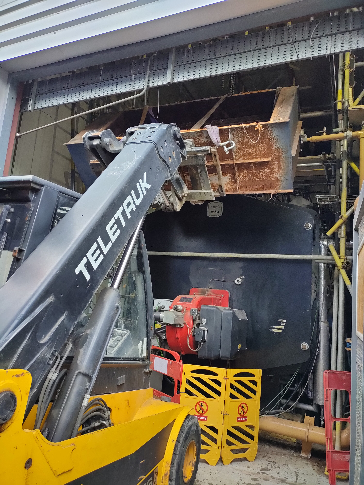

About Us
Staffs Industrial Removals delivers specialist lifting and engineering services across the UK supporting everything from straightforward single‑lift jobs to fully managed, complex projects.
We take care of machinery moving, factory relocations, workshop clearances, and heavy technical lifting across a wide range of industries. Our work is precise and backed by genuine engineering expertise — a level of capability that sets us apart from standard lift‑and‑shift providers. As an engineer‑led, family‑run business with decades of hands‑on experience we also offer fabrication work, bespoke lifting solutions, machine rebuilds and practical on‑site problem solving when challenges arise.
Our team is trained to work safely, efficiently, and professionally with all types of equipment and machinery, ensuring your project runs smoothly and is completed to a high standard from start to finish.
Gallery










Our Accreditation & Compliance
We are fully trained and licensed to operate a wide range of lifting equipment and machinery carrying out every job safely, efficiently and to a high professional standard. We handle all planning and paperwork, including full lift plans, RAMS, and any required documentation. Our team can act as Appointed Persons and oversee the entire lifting process from the first site visit through to safe completion giving you confidence that everything is managed correctly from start to finish.
Staffs Industrial Removals is a member of the RHA and operates in line with recognised industry standards and is registered with the SafeContractor scheme.


Contact
Email:
sirltd@outlook.com
We aim to answer all inquiries within 24-48 hours.
Where possible please include a full description of the job and any photos to assist with your enquiry.